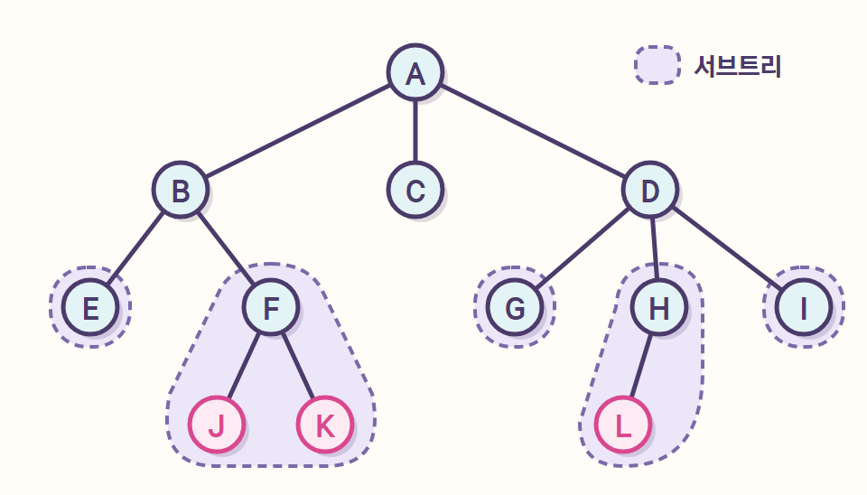

1.3.1
트리 개념, 기본 용어
- 트리 기본 용어, 일반 트리를 이진 트리로 변환
트리 개념, 기본 용어
- 트리의 정의
- 구성 원소 간의 계층 관계를 표현하는 자료구조 (계급적인 종속 관련성)
- 1개 이상의 노드로 구성된 유한 집합
- T의 구성요소 가운데 루트노드(근노드)라는 특정한 1개의 노드 존재
- 근노드를 제외한 노드들은 n(n≥0)개의 서로 교차하지 않는 분리된 부분집합으로 분리
- 각 Ti(1≤i≤n)는 하나의 트리가 되며, 이를 근노드의 서브트리라고 부름
- 한 노드가 여러 개의 선분을 구성할 수는 있지만, 노드 사이에 사이클은 없어야 함
- 기본 용어
- 노드, 가지(링크) : 트리는 노드/링크, 그래프는 정점/간선이라고 부름
- 부노드, 자노드
- 근노드(루트노드)
- 서브트리 : 근노드 제거 시 생기는 트리의 부분집합
- 노드의 차수 : 각 노드를 근노드로 하는 서브트리의 수 (= 각 노드가 지닌 가지의 수 = 자식의 수)
- 트리의 차수 : 트리를 구성하는 노드들의 차수 중 가장 큰 차수
- 단노드 : 맨 마지막 노드 / 가지를 갖지 않거나 자노드X, 차수 0인 노드 → C E G I J K L 원본과 다름 · 원본: “C E H I J K L”, 그림에서 H는 자식 L이 있어 차수 1이고 G가 차수 0
- 간노드 : 차수가 0이 아닌, 단노드 이외의 모든 노드 → A B D F H 원본과 다름 · 원본: “A B D F G”, 그림에서 G는 단노드이고 H가 간노드
- 제노드 : 같은 레벨, 동일한 부노드 → BCD, EF, GHI
- 레벨 : 트리 전체에서 노드의 위치 (근노드: 1 / A: 1, BCD: 2 …)
- 높이 : 레벨의 가장 높은 값 = 깊이 (이 트리의 경우 4)
- 경로 : 경로의 길이는 경로를 구성하는 노드 수 − 1
- 조상노드 : K의 조상은 A, B, F / L의 조상은 A, D, H (부모 포함) 원본과 다름 · 원본: “L의 조상은 A, D, G”, 그림에서 L의 부모는 H
- 후손노드 : D의 후손은 G, H, I, L
- 숲 : 근노드 제거 시 생기는 n(n≥0)개의 분리된 트리들의 유한집합 (트리군)
- A 제거 시 3개의 트리 (T1, T2, T3)로 구성된 트리군 형성

| node | A | B | C | D | E | F | G | H | I | J | K | L |
|---|---|---|---|---|---|---|---|---|---|---|---|---|
| degree | 3 | 2 | 0 | 3 | 0 | 2 | 0 | 1 | 0 | 0 | 0 | 0 |
- k원 트리 : n개 노드, 트리 차수 = k
- 총 링크 필드 수 = n·k
- branch 수 = n − 1 (루트는 위로 가는 branch가 없고, 나머지 노드는 한 개씩 가짐)
- 총 널 링크 수 = n·k − (n − 1)
- ⇒ k = 2일 때(이진트리) 가장 낭비되는 공간이 적고 효율적 (50% 비율) = 일반 트리는 null link 점유율이 높음
- 일반 트리 → 이진 트리 변환 방법
- (일반 트리에서) 나의 왼쪽 자식 → (이진 트리에서) 왼쪽 자식
- (일반 트리에서) 나의 형제 → (이진 트리에서) 오른쪽 자식